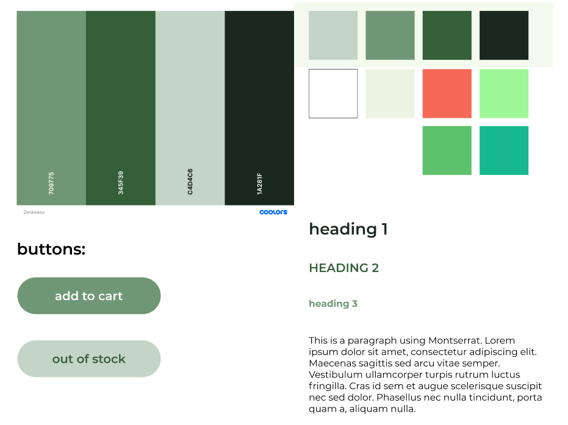

ZenKeebs.
Description:
A 6 week design & coding project to create an e-commerce website of a theme of our choosing for our imaginary client. ZenKeebs is a website directed towards mechanical keyboard enthusiasts, offering all sorts of related products used to build keyboards. This project was a step-up from Project 01, where we all had to individually build up an idea for a website but not build it with code.
Skills:
Prototyping + UX/UI Design + Coding
Team:
Dennis Limbo
Tools:
Figma + Photoshop + Sublime Text + HTML/CSS Validator + GitHub/GitKraken
Goal:
To create a website that can inform the users of any sales or promotions, as well as ease of access to products for easy browsing. The user should also be able to learn about the company behind the website and to contact them if needed. The checkout process must be complete so the user can fill out all neccessary info to successfully purchase and place an order on their products.
01. Colour + Component Design
02. Prototyping
My team mate and I took our wireframes and styleguides from Project 01 to merge them together, picking what we thought was best for the project. We settled with my wireframes + his color scheme + his e-commerce idea (Mechanical Keyboards).
click images to enlarge

03. Coding
For this project, I already had some working knowledge of basic HTML & CSS but we were taught Flexbox. Learning this new method of coding and applying it was challenging but it also made it easier to customize pages to my needs and liking. However I did run into some trouble with all the nesting involved with some of the div's but it was nothing time could not fix.
04. Landing Page
Initially, our landing page was quite plain with only a single image banner, as seen in our wireframes above. This website was supposed to promote products and sales for any potential customer that comes to this website, therefore I needed to make sure to add some product visuals onto the landing page, to draw in customers
05. Reflection
This project had taught me a lot, in terms of skills and knowledge ranging from new CSS methods and GitHub! I think knowing these things will help me in the working field of my future jobs, and help with communication with other teams I will be working with.